1922 - Tight Linings and Boning,
Woman's Institute of Domestic Arts & Sciences
by Mary Brooks Picken
Boning
REMARKS
38. In dressmaking, the term boning means the stiffening, or staying, of one part of a garment so that it will retain its shape and act as a support for another. At one time, whalebone was the only available stiffening medium, but an excellent substitute, namely, featherbone, so called from the fact that it is made of strips of feather quills woven together with linen thread, has been brought out; indeed, featherbone has proved to be so superior to whalebone that the latter is seldom if ever used.
Besides being costly, whalebone is unsatisfactory to handle. Strips of it cut into the desired lengths must be inserted into casings that are made long enough and wide enough to hold it; and to put them in a garment so that they will hold in position without slipping up or down or twisting in the casing requires much time, as well as the services of a person expert in such work. Featherbone, on the other hand, is not expensive; it is very pliable and may be sewed through readily and without injury, thus permitting it to be secured in place with very little effort.
Many kinds and grades of featherbone, covered with silk, satin, or cotton, are to be had, and as boning is generally put in places subject to great wear and strain it is advisable, if the best results are desired, always to employ a good quality of featherbone. The cheaper grades frequently break before a garment is worn out, making it necessary to replace them.
39. In order that a good idea may be formed of the way in which featherbone may be applied, the boning of a tight lining and girdles are taken up in detail at this time. The various steps to be taken and precautions to be observed should not be passed over lightly, for a knowledge of such work is of particular value in the construction of many dresses and parts of dresses.
BONED TIGHT LINING
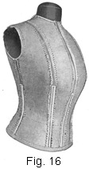40. Selection of Material.—In Fig. 16 is shown a tight lining stayed and supported with featherbone. A lining so prepared is necessary for a waist the material of which must be supported to retain its shape, and also for a dress that is draped, for it serves as an excellent foundation on which to build. The kind of material to use for such a lining depends on the material employed for the dress of which the lining is to be a part. China silk, messaline, and percaline are used most, but taffeta silk is sometimes employed, and for inexpensive dresses cambric or light-weight sateen may be used if desired. For nearly all soft-silk dresses, however, China-silk lining will be found convenient and satisfactory, for it is not unduly expensive and it is light in weight and yet of a weave firm enough to give the necessary support to the dress itself. For dresses of wool or of heavy silk or satin, percaline of good quality is suitable for linings, unless more expensive lining is desired; then, of course, taffeta silk or firmly woven satin is preferable.
41. Amount of Material Required.—For the average figure, 2 yd. of 30-in. material is usually sufficient for the tight lining of a dress, because in a dress lining the extension below the waist line is not so great as for a lining used as a dress-form covering; usually, it is from 3 to 6 in., the length depending on the style of dress in which the lining is to be used. Sleeves are rarely made of the same material as the dress lining, for the reason that such material would make the sleeve appear clumsy, being too heavy to cling to the arm and to shape into it properly; yet, if the sleeves for any reason are to be lined with the same material as the dress, allowance must be made for the extra material that will be required.
42. Cutting Out and Making the Dress Lining.—To cut out and make a tight lining that is to be stayed with featherbone, as shown in Fig. 16, requires as much care as the tight-fitting lining used to cover a padded dress form, the procedure, briefly, being as follows: First, determine how far below the waist line the lining is to come, and then fold back or cut off the tight-lining pattern pieces at the proper places. Next, fold the material through the center, crosswise, and pin the selvage edges together, and on it place the pattern pieces, pinning them in place in the manner explained in connection with the dress-form covering. With the pattern pieces in place, cut the lining out, allowing 3/8 to ½ in. for seams; also, cut two bias strips 1 ½ in. wide and 2 in. longer than the opening of the lining. These strips serve as facings for the opening, as a casing for the featherbone, and as a covering for the rings of the hooks and eyes. After the material is cut out, baste and fit the lining and then stitch and press all seams except the shoulder seams. These seams should have the basting removed from them so that the lining will lie out smooth, thus making it more convenient to put in the featherbone.
If sleeves are to be made of the same material as the lining, cut them the same as the sleeves for a dress-form tight lining; also, baste and fit them, but do not fit them so close as for a dress-form sleeve, as they must be loose enough to be perfectly comfortable. When the sleeves are properly fitted, stitch them in the regular way, but do not attach them to the lining until it is boned.
With the lining in this condition, the work of boning, or inserting the featherbone may be taken up.
43. Quantity of Featherbone Required.—The quantity of featherbone required for a tight lining is not great. On an average, the two-piece-back lining requires 2 ½ yd. and the three-piece-back lining, about 3 yd., the quantity depending on whether the figure is long-waisted or short-waisted. Long-waisted figures, as is evident, require more featherbone length for each seam than do short-waisted figures.
44. Cutting the Featherbone Into Proper Lengths.— The first step in preparing featherbone for a tight lining is to cut it into proper lengths. Therefore, measure the under-arm seam from the armhole to the waist line to determine its length and then cut a piece, or strip, of featherbone equal in length to one-half of the length thus determined, plus the length below the waist line, plus 1 in. This extra inch is an allowance for finishing the end of the featherbone that is to be uppermost when secured to the waist. The piece thus cut out serves as a measure in cutting the other bones to be used, for their length is regulated by the length of the under-arm seam.
Next, cut a second under-arm piece of featherbone, making it the same length as the first piece; then, as the waist lining here discussed opens in the back, cut a piece for the center front and two for the center back, making each of these 1 in. longer than the featherbone cut for the under-arm seam. Of course, if the waist opens in front, two of these pieces would be for the center front and the other for the center back. For openings of this kind, there is a special hook-and-eye featherbone. It is woven a little closer than the covered bone and is a little softer, making it easier to sew through. However, if hook-and-eye featherbone cannot be procured, use may be made of regular featherbone.
Next, cut two pieces of featherbone for the two front side seams, and two pieces for the two back side seams, making each 2 in. longer than the under-arm piece used as a measure. The two front side seams must be boned a trifle higher than the under-arm and the center-front seam in order to avoid a break at the bust line; and the same remark holds true for the featherbones in the back side seams— they must come higher than the piece, or pieces, at the center back in order to avoid a break below the shoulder blades.
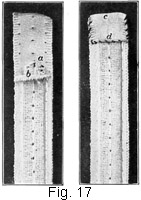45. Finishing the Ends of Featherbone.—After cutting the pieces of featherbone—nine in all—in the manner just explained, it is necessary to finish the ends of all except the two used for the opening of the waist. The covering and lining is pulled off both of these so as to avoid making the casing bulky when the featherbone is in place. As the hook-and-eye featherbone has no covering, this precaution, of course, does not have to be observed when it is used. To finish the ends of the feather-bone, proceed as shown in Fig. 17. Pull down the covering and lining of the featherbone to within 1 in. of the upper end; cut the featherbone off with a pair of shears or scissors, shaping the end as at a; and cut away the lining portion until it appears as at b. Then turn the covering under 1/8 in. and bring it down 3/8 in. over the end, covering it entirely, as at c. Finally, overcast the edges as shown at d, so that the end will have a neat appearance. When all the pieces of feather-bone are finished in this manner, measure up from the waist line on each seam of the lining to the point where each bone will come, and there place a pin crosswise so as to mark the point where the end of the bone is to be placed.
46. Boning With the Boning Attachment.—The next step in boning a lining consists in stitching the featherbone in place. Sewing silk should be used for this purpose, as it is a little more elastic than cotton thread and therefore is not so liable to break. Then, too, if silk-covered featherbone is used, as is generally the case, the silk thread is in keeping with it.
To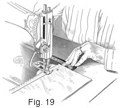 stitch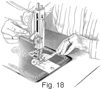 the featherbone in place, proceed as shown in Figs. 18 and 19. Lay the piece of featherbone on the sewing-machine feed so that its finished end is next to the presser foot and its wrong side is up; pull the featherbone under the needle, and hold it so that its center is exactly under the needle point and the finished end of the bone is ½ in. beyond the needle; then, holding the feather-bone in this position, place the boning attachment over the feather-bone and secure it in position with the large thumbscrew that is a part of the equipment of every sewing machine. When the featherbone is in proper position, it should appear as shown in Fig. 18. Next, place a pressed-open seam of the lining directly over the center of the featherbone, as at a, Fig. 19, with the crosswise pin that marks the termination of the featherbone even with the finished end of the bone, and proceed to stitch the seam to the featherbone, as shown, beginning ½ in. below the end of the bone. This ½ in. of the bone is left free so that it will not wear a hole in the lining nor draw at the upper end, as it might do if it were sewed in place. The attachment will guide the featherbone, making it necessary only to watch the seam so as to keep its stitching line directly over the center of the featherbone.
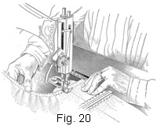47. In boning this lining, which opens in the back, it is well to begin with the center-front seam and then work around to the back, boning each seam, with the exception of the opening. Of course, if the lining opens in front, the procedure would be the reverse of this. To get the best results in doing this work, crowd, or ease, each seam on to the featherbone—not so much, though, as to make a wrinkle, but just enough to keep the seams from appearing the least bit drawn, for there should be just a little more seam length in each seam than bone length. By easing all the seams to the featherbone pieces in this manner, the bones are not liable to pull, or pouch, out from the figure, for then the lining is a trifle fuller than the featherbones, and it has a tendency to hold them back close to the figure, whereas if the seams were stretched over the bones, the reverse would be true. When, in each seam, a point within 1 in. of the waist line is reached, lift the featherbone by pulling the seam firm, as in Fig. 20, for 2 in.; that is, stretch the seam until there is more bone length than seam length for 1 in. above and 1 in. below the waist line. This operation, called springing the bone, is performed so as to give the proper curvature to the figure. It is necessary in the hip section to crowd, or ease, the seams of the lining to the featherbone so that it will set smooth and not have a tendency to pouch out at the lower edge. When all the seams are boned in the manner explained, remove the attachment and proceed with the finishing of the opening.
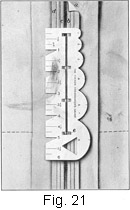48. Preparing the Casing and the Facing for the Opening. The casing and the facing for the opening should be prepared next. Therefore, place the bias facing pieces with their right sides to the wrong side of the lining and one bias edge along the seam line of the opening, as at a, Fig. 21. Turn the seam allowance of the lining over the facing on the traced line, and then stitch 1/8 in. from the edge, as at b. Place the hook-and-eye featherbone or the uncovered featherbone, whichever is used, up as close as possible to the stitching between the lining and the facing, and stitch through the bone, the facing, and the lining, as at c, from the top of the bone, easing the lining on to the bone to within 1 in. of the waist line; then spring the bone for 2 in.—that is, 1 in. above and 1 in. below the waist line—and ease the lining on to the bone to the bottom of the waist. Next, stitch on the outside of the bone, as at d, and continue this stitching from the neck of the lining to the bottom. This stitching strengthens the facing and provides a firm piece on which to sew the rings of the hooks and eyes. Finish both sides of the casing in the same manner, and then make ready for the hooks and eyes, which should be sewn on before the lining is finished at the top or the bottom.
49. Marking for the Hooks and Eyes.—Before marking the spaces for the hooks and eyes, determine how high the lining is to come at the neck and place a pin crosswise at this point, so that no marking will be done on the portion that will be cut off, for, as a rule, a lace yoke is used in a dress requiring a boned lining, or the neck is cut low, and it is not necessary to extend the hooks and eyes on the lining portion all the way up to the neck. To mark for the hooks and eyes, bring the edges of the opening together, waist line meeting, and place pins crosswise every few inches to hold the. edges together; then, with one cross-slot of the Picken dressmaker's gauge directly over the waist line, as at e, Fig. 21, mark each cross-slot with a pencil or with tailor's chalk. Move the gauge along on the lining until the entire length is marked, always remembering to place a cross-slot of the gauge directly over the last mark made, so as to insure even spacing the entire length of the opening.
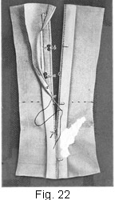50. Alternating the Hooks and Eyes. — On referring to Fig. 22, it will be seen that the hooks and eyes of a tight lining whose opening edges meet are sewn on differently from those of a garment whose opening edges overlap, as, for example, in the shirred dress previously discussed. By alternating the hooks and eyes in the manner shown, a more substantial closing is obtained and the danger of the hooks becoming unhooked is obviated. Thus, it is possible on a boned lining to use humpless hooks and round eyes, which are easier to hook and unhook than are hump hooks and straight eyes, especially on a garment that fits as close as a tight lining.
In sewing hooks and eyes on the tight lining, place the prong of each hook in about 1/16 in. from the edge of the casing, as shown at a, and let the eye extend out 1/16 in., as at b, so that the hook may catch over the eye easily, remembering, in placing the hooks, to put a hook at the waist line on the right-hand side of the opening for convenience in hooking. Sew over the rings, through the bone and lining, with an over-and-over stitch, rather than with a buttonhole stitch. This kind of stitch requires much time to make, but it is very necessary, because considerable strain comes on the hooks and eyes of a tight, boned lining. Also, remember to sew through the prong of each hook, so that there will be no possibility of the prongs pulling away from the casing. After sewing through the rings, in sewing on the round eyes, sew across the bottom of the eye, as at c. When all the hooks and eyes are sewed on, turn the outer edge of the facing over a scant 1/4 in., as at d, and hem the turned edge to the first stitching of the casing, as at e. Then, turn down and overhand the facing edge on the other side of the opening, taking care to have the facing come well up under the prongs of the hooks, as at f. With this work completed, proceed to finish the lining itself.
51. Finishing the Lining.—To finish the lining, trim it off even all the way around the bottom, and then face it with a bias strip of the lining material cut 1 in. wide, turning the facing over and finishing it ½ in. wide on the wrong side. The finishing of the neck and the armhole will not be fully explained until the lining is used in the making up of a dress, as the dress itself determines the kind of finish to use for the neck and the armhole or the sleeves. However, if it is desired to complete the lining, the stock collar may be added to the neck, and the top of the collar and the armholes bound with bias facing finished 3/8 in. wide. If sleeves of the same material as the lining are to be used, stitch and notch the seams and sew them in the lining, overcasting the armholes and facing the sleeves at the wrist, or lower edge, with a 3/8-in. finished facing.
52. Boning a Lining Without an Attachment.— Feather-bone 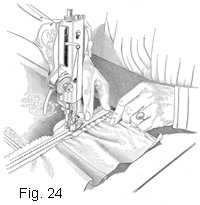may 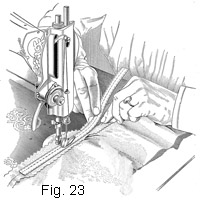be put in without the boning attachment previously mentioned, if necessary; but, in such an event, more time is required and much care must be exercised in guiding the featherbone and the seam at the same time. To bone a lining without the attachment, first finish the pieces of featherbone at one end and mark their position on the seams in the manner already explained; then, instead of using the attachment, open out the seam as in Fig. 23, place the center of the featherbone, wrong side down, directly over the center of the seam, and begin to stitch ½ in. from the end of the bone; proceed with the stitching very carefully, easing the lining and springing the featherbone where necessary. Fig. 23 illustrates clearly how to stretch the lining in order to spring the bone, and Fig. 24 shows how to ease the seam on to the featherbone without the attachment.
GIRDLES, OR WAIST-LINE FOUNDATIONS
53. Dresses and gowns of sheer fabrics other than lingerie materials require some sort of foundation on which to build the garment, and where a full tight lining is not desirable a boned girdle—that is, a girdle, or belt, stayed with featherbone—is a very satisfactory foundation. Boned girdles, or boned bodices, as they are sometimes called, may be constructed of silk or satin and used in the very elaborate gowns, or they may be made of inexpensive material and made to serve to excellent advantage in the simplest dress or blouse. Very satisfactory girdle forms may be made of a good quality of percaline, as this material is firm, keeps its shape well, and stretches very little; in fact, percaline seems to be used more than any other material for this purpose.
At any rate, the uses to which such a foundation may be put are so numerous that it is not considered necessary to enumerate them, for when a correctly fitted and correctly made girdle form is used in a dress, no argument will be required to convince even the most skeptical of its merits. The neat effect it gives a dress, to say nothing of the support it offers, makes it invaluable in draped or non-washable dresses.
54. The figure has much to do with the shape that the girdle, or foundation form, should assume; Dame Fashion, too, has a word to say as to its width and shaping. When figures are straight from bust to hips and the dresses assume the same lines, then straight girdle forms should be used; if figures curve in at the waist line and the dresses fit close, the close-fitting girdle forms are desirable. A very slender woman frequently can add to her appearance by using a moderately straight girdle; and, on the other hand, the stout woman may be made to appear less stout if a girdle form that is only slightly curved is worn, for such a girdle brings the waist line into prominence and helps to lose the full bust and hips. Women large in stature or in flesh are frequently of the opinion that they must wear their clothes just as tight as possible, while in many instances the straighter lines would serve to make them appear less stout than if the garments fitted close. With these thoughts in mind, several styles of girdle forms are here considered, in order that one may be had for any style of figure. As will be observed, some of them open in the front and some open in the back. The location of the girdle opening depends on the style of dress for which it is to be used and, of course, the location of the opening in this dress.
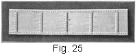55. In Fig. 25 is shown a straight girdle form. This style of girdle is excellent for use in light-weight dresses that do not fit close at the waist line and yet need some support where the waist and the skirt join. To make a girdle of this kind, cut a crosswise piece of material the width of the girdle desired, as a rule from 2 to 3 ½ in. Ordinarily, a lengthwise strip of material would be cut for a girdle, but as material cut crosswise fits into a figure better, and as the stitches used in staying the dress to the girdle impart strength to it, all possibility of splitting is overcome. Then, as shown at a, sew a piece of ribbon-covered collar bone, which is another form of featherbone used for support in collars, crosswise of the girdle every 2 or 3 in. to give it the necessary support. When these pieces are in place, bind the outer edge with bias binding tape, as shown. After the edges are thus bound, put the girdle form around the figure and pin it as tight as desired; then cut off the ends ½ in. from the pins, allowing this ½ in. to finish the ends with a narrow hem. When the ends are stitched, sew hooks and eyes on the girdle opening—one hook in the center on the right-hand side and one at each edge of the girdle. If the girdle is more than 3 in. wide, then two additional hooks will be needed to insure a substantial closing.
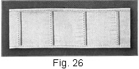56. In Fig. 26 is illustrated a straight girdle that is a little wider than the one shown in Fig. 25. It is made in practically the same way, but, as will be observed, the pieces of featherbone are placed farther apart. Placing the featherbone in a girdle is important work; yet, straight girdles do not demand so much attention as fitted girdles.
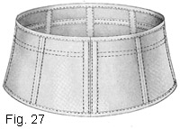57. In long-waisted dresses the girdles, or belts, of which come below the natural waist line, girdle forms similar to the one shown in Fig. 27, and known as a fitted girdle, should be used. For a girdle of this kind, the top of the circular-skirt pattern serves as a pattern. The waist line is divided into four equal parts, and the extension is made 4 in. below the waist line and 1 in. above, the work being carried out in practically the same way as for a skirt with a raised waist line.
In cutting out the material for a fitted girdle, place the pattern pieces traced from the foundation circular-skirt draft in the same way as they would be placed in preparing to cut out a skirt; that is, with the center of each gore as near as possible on a lengthwise thread of the material. Cut the girdle so that there will be a seam in both the center front and the center back, and trace the waist line on each section. With this work done, baste the sections together, beginning at the waist line and basting up and down, which method of basting applies for all fitted girdles. Next, put the girdle on and fit it, remembering that the extension should come at least 1 in. above the waist line; also, pin a tape around the waist line in the regular way, pinning it rather close. Fit the top of the girdle form in the same way as the top of a skirt, being careful to have it set smooth and easy all the way around, taking in or letting out the seams if necessary. When the tape is securely pinned in place, remove the girdle; stitch up the seams and trim them to within 1/8 in. of the stitching; press the seams open and stitch the waist tape on, taking care to keep it straight and even and to stitch on both edges; then proceed to put in the pieces of featherbone without the boning attachment. As the seams in this girdle are trimmed very close and the featherbone is stitched on each edge instead of the center, the pieces of featherbone may be attached better without the attachment.
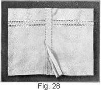In Fig. 28 is shown how five-cord tape may be used in a girdle of this kind. Such featherbone is stitched directly over the seam, and this is covered with a strip of bias tape that is wide enough to cover the featherbone. Five-cord tape does not make the girdle quite so heavy as silk-covered featherbone does; however, if a light-weight girdle is desired, the covering may be removed from each side of the silk-covered featherbone, the bone stitched to the seam in the way just described, and the seam and bone then covered with bias tape. If desired, three-cord tape, which is a trifle narrower than the five-cord kind, may be used instead of either the regular featherbone or the five-cord tape; but if it is used the seams of the girdle should come a little closer together, as the three-cord tape does not give so much support as either of the other staying materials.
When the featherbone is in place, finish the opening of the girdle the same as for a boned tight lining; also, place the feather-bones in the casing and sew on hooks and eyes in the same manner, beginning at the waist line to mark for the hooks and eyes. When the hooks and eyes are sewed on, trim the girdle even at the top and the bottom and bind it with a strip of bias tape, taking care to cover the ends of the featherbone at each seam well, so that they will not pull out.
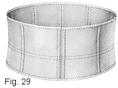58. In Fig. 29 is shown a girdle that is very similar in appearance to the one illustrated in Fig. 26. It serves practically the same purpose, but it is shaped so as to fit a little and therefore has a tendency to make a figure appear a trifle smaller below the waist line. This girdle is cut from the pattern of a two-piece-back waist, and extends 2 in. below the waist line and 3 in above. So as not to destroy the original tight-lining pattern, make a pattern for this girdle by tracing off the sections.
The girdle shown in Fig. 29 is basted and fitted in the same way as the one shown in Fig. 27, and the seams are stitched up and the tape is basted on in the same manner; but the featherbones are not put in in the same way. In a girdle form of this kind, it is necessary to stretch the seam, as for a tight lining, for 2 in. at the waist line and then ease the lining to the featherbone below the waist line. The opening, though, is finished in exactly the same manner; that is, the same as for a boned tight lining.
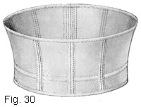59. In Fig. 30 is illustrated a girdle with a 3-in. extension above the waist line and only a 1-in. extension below. This style of girdle form is used where the girdle of a dress is built a little higher than the normal waist line. The two-piece-back waist pattern is used in making the pattern for this girdle form, the necessary extensions being made above and below the waist line so as to give the girdle the desired width. The girdle is made in practically the same way as the one shown in Fig. 29.
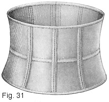60. In Fig. 31 is shown a form that is a little too wide to be properly termed a girdle form, yet in nearly every instance in connection with dressmaking it would be designated by that name. It is really a bodice stay, as it comes well up on the figure, the extensions being 4 in. below the waist line and 4 ½ in. above. Such a bodice stay is excellent where a very wide girdle is worn, as it tends to add strength to the waist; in fact, it gives almost the same support as a tight lining. In some instances where only drapery shows over the shoulders, as in evening dresses, the girdle form, or bodice, is cut wide enough to come well up under the arms. The only difference between the making of such a girdle as this and one of the others already mentioned lies in the alternating of the hooks and eyes on the opening. In a girdle as wide as this, it is better to alternate the hooks and eyes than to put all the hooks on one side and all the eyes on the other.
61. Where a bodice stay is made so very high above the waist line, straps of ribbon or tape ½ to 1 in. wide may be used over the shoulders, in order to hold the upper edge in position. A good plan is to make a close-fitting bodice stay of China silk of good quality, and then bind its upper and lower edges with ribbon and provide ribbon straps for over the shoulders. Such a stay affords a substantial foundation for lingerie dresses and is invaluable as a support under dainty silk or lace corset covers.
When made for the purpose just mentioned, a bodice stay is best opened at the center front; but when made to serve as a foundation for dresses the opening must be made at a seam that is convenient for the dress opening.
62. When the straight-line silhouette is in vogue, ready-to-wear dresses carry a loose waist-line effect and in nearly all medium-priced dresses girdle forms are omitted and a piece of skirt belting, the soft pliable quality being always preferable, is used at the waist line. The waist is fastened to the belt first and then the skirt is fastened, neither meeting, however. This precaution is taken to avoid bulk around the waist. In most of the better dresses, a strip of China silk edged all the way around with narrow, inexpensive lace is used on the inside to cover the belt and to make the dress appear well finished.
In dresses having the long-waist, loose-basque effect, a fitted lining of soft, firmly woven silk or satin is used, the lower edge of the lining coming from 2 ½ to 4 in. below the waist line. If the dress is of heavy material and the skirt is draped at the waist line, it is advisable to use a ribbon or a tape 1 1/4 or 1 ½ in. wide inside the lining to hold the waist line in place. This ribbon should merely be catch-stitched to the side seams, center back, or center front, and then the ends hooked together independent of the lining.
When the waist-line effect is loose, boning is omitted even when a fitted lining is used, unless a very low, loose corset is worn. Some women who wear girdle corsets prefer to use a few bones in the waist lining as a corset substitute.
A great responsibility in point of style rests with the waist line of a dress. A smart dress from a fashion point of view can lose its smartness entirely by a waist line that is too tight or too high for the silhouette. Very careful consideration should always be given in fitting a waist line to have it individually becoming and at the same time entirely in keeping with the mode. In fitting waist lines, it is always well to remember that the hem, the neck, and the sleeve turns should be made before the waist-line effect has been definitely decided, because the waist line is influenced by all, especially the neck and the hem.
TIGHT LININGS AND BONING
EXAMINATION QUESTIONS
- What are the advantages of a padded dress form?
- Of what must one be careful in selecting a solid form for padding?
- Why are tight linings cut crosswise of the material?
- (a) Describe the placing of the pattern on the material for a tight
1 lining.
(b) Why are wide seam allowances desirable in a dress-form covering? - Why is the covering for a dress form left open in the back?
- Describe the pinning and basting of the two-piece sleeve for a dress form.
- Why is it necessary to have an accurately marked waist line on a dress form?
- How is "a lining fitted on: (a) very square shoulders? (b) sloping shoulders?
- (a) Of what must one be careful in placing cotton padding on a dress
form?
(b) What precaution is necessary regarding the pins used in securing the padding to a form? - (a) Why is it advisable to keep a covered dress form clean?
(b) What are the advantages of a form skirt? - In what way is featherbone superior to whalebone?
- (a) What materials are most suitable for tight boned linings?
(b) Why is it advisable not to use the same material for the lining sleeves as for the lining itself? - What seam regulates the length of the featherbone pieces?
- Describe the method of finishing featherbone at the end.
- What is meant by: (a) springing the bone in a seam? (b) easing the material on the bone?
- Why are different shapes and widths of girdle forms necessary?
- What is the advantage of using five-cord tape for some girdle forms in preference to the regular featherbone?
- Of what must one be careful in binding the edges of a girdle form?
- What girdle form is best suited to a long-waisted dress?
- Submit a sampler of a casing and facing prepared for hooks and eyes.